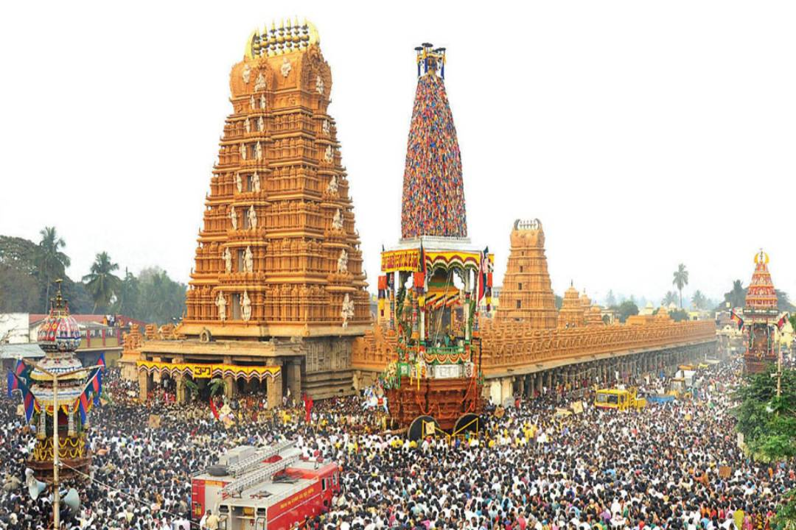
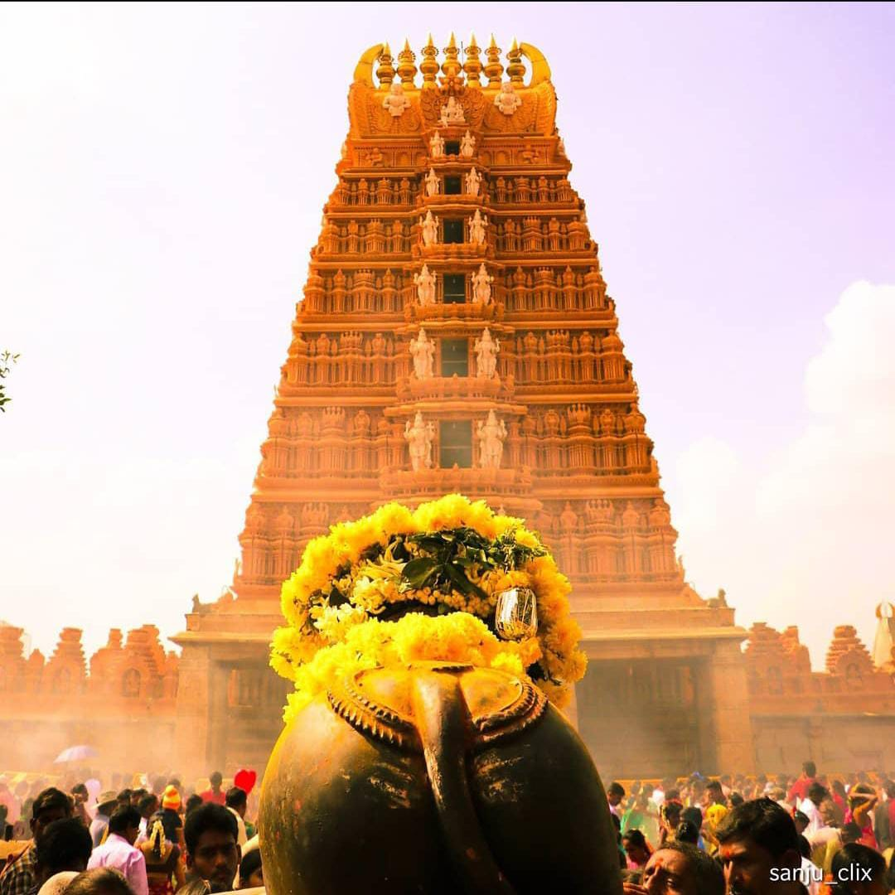
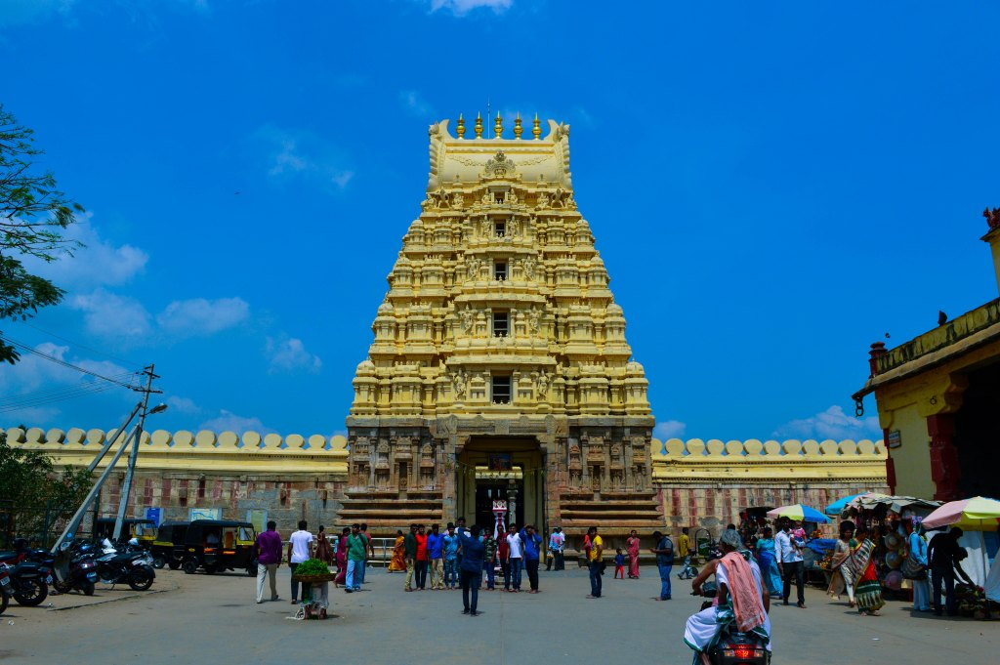
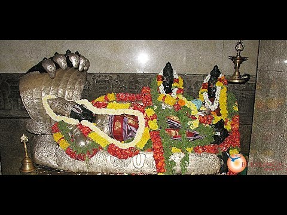

List Of Worship Places
Srikanteshwarananjundeswara Temple


The Nanjundeshwara Temple (also called Srikanteshwara Temple) is an ancient temple in the Hindu pilgrimage town of Nanjanagudu in the Karnataka state. It is known for the ancient temple of the god Nanjundeshwara (another name for the god Shiva, also known as Nanjundeshwara). The Nanjundeshwara temple is located in the town on the right bank of river Kapila, a tributary of the Kaveri. Nanjangudu is also known as "Dakshina Prayaga" or "Prayag of South". Nanju in Kannada means poison; the name Nanjundeshwara means the "God who Drank the Poison" (halahala), a word that has its origins in the legend of the Great Churning of the Ocean of Milk; thus the town got the name 'Nanjangudu' which means "the abode of the god Nanjundeshwara".
The "Dodda Yaathre" festival at Nanjangud by temple attracts thousands of devotees. The festivities in the fair include five colorful chariots that are pulled by devotees on a path called the ratha beedi.Parasurama temple is near to Nanjundeshwara temple. The temple Gopuram and its extensive exterior was built by Immidi Sri Krishnaraja Wodeyar, the King of Mysore.
Location
Ranganathaswamy Temple, Srirangapatna


The Ranganthaswamy temple (usually referred to as "Sri Ranganathaswamy") in Srirangapatna, in the Mandya district of Karnataka state, India, is dedicated to the Hindu god Ranganatha (a manifestation of the god Vishnu). It is one of the five important pilgrimage sites of Sri Vaishnavism along the river Kaveri for devotees of Ranganatha. These five sacred sites are together known as Pancharanga Kshetrams in Southern India. Since Srirangapatna is the first temple starting from upstream, the deity is known as Adi Ranga (lit; "first Ranga"). The town of Srirangapatna, which derives its name from the temple, is located on an island in the river Kaveri.
Location